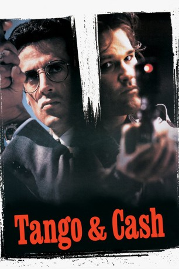

#101 Tango und Cash
Alternativ: Tango & Cash
 
 IMDB-Wertung: 6.4 / 10
IMDB-Wertung: 6.4 / 10  Metascore: 41
Metascore: 41 
Als draufgängerische und skrupellose Cops sind Ray Tango und Gabe Cash die Besten in Los Angeles. Jeder geht seinen eigenen gnadenlosen Weg im Kampf gegen das organisierte Verbrechen. Als ein mächtiges Syndikat jedoch versucht, die beiden auszuschalten, müssen sie sich verbünden. Im Kampf ums eigene Überleben wird aus zwei knallharten Einzelgängern ein hochexplosives Team. Sylvester Stallone und Kurt Russell…
Jahr: 1989
Dauer: 104 Minuten
FSK: 18
Land: USA Studio: Warner Bros.Tonspuren:
Untertitel:
Auflösung: 1080p (1920×800) Größe: 8130 MB
Genre: Action, Komödie, Krimi, Thriller
Regisseur: Andrey Konchalovskiy, Albert Magnoli
Drehbuch: Randy Feldman
Soundtrack: Harold Faltermeyer
Darsteller:
Datei: X:\FSK18-1900-1999\Tango und Cash (1989, FSK18, 1920x800).mkv seit 03.02.2015
Festplatte: FSK18
 Es gibt insgesamt 108 Filme in der Gruppe 'FSK18-1900-1999'
Es gibt insgesamt 108 Filme in der Gruppe 'FSK18-1900-1999'